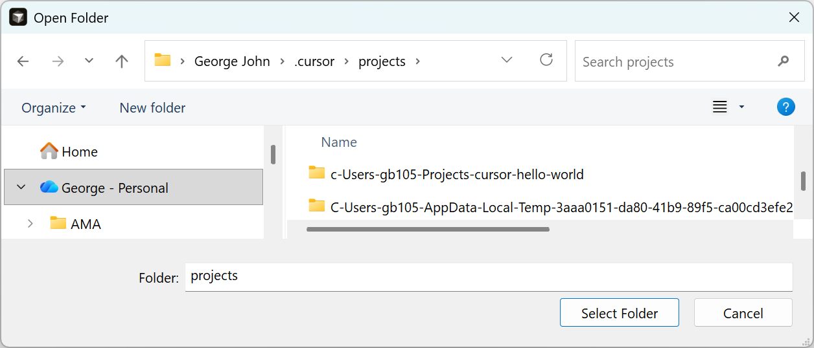
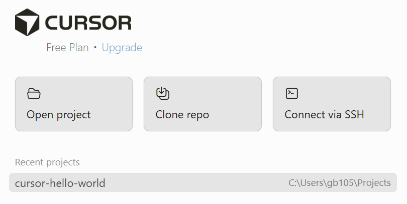
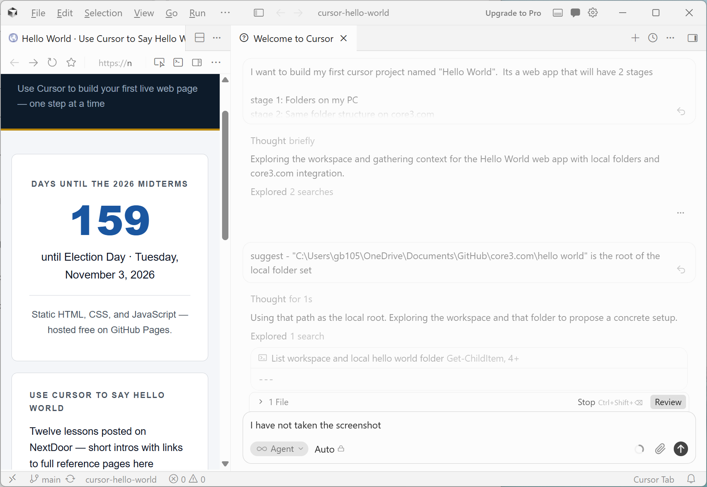

You opened a project in Lesson 02
If you followed Lesson 02, you already created an empty folder and opened it in Cursor.
Cursor created index.html inside it. This lesson is a closer look at the editor
and how to open the project again later.
One folder = one project
In Cursor, a project is simply a folder on your computer. All your HTML, CSS, and JavaScript files live inside that folder. When you ask Cursor to edit your site, it works on files in the folder you opened.
Create a folder (if you skipped Lesson 02)
Following along? Create an empty folder anywhere you like, for example:
- Windows:
C:\Users\YourName\Projects\hello-world - Mac:
/Users/YourName/Projects/hello-world
Name it hello-world (or any name you prefer). We will add files in the next lessons.
Open the folder in Cursor
On Windows, two common ways:
Way 1: Open Folder (Windows Explorer)
Use this the first time, or to open a project folder you have not opened before.
- File → Open Folder… (or Open project on the welcome screen)
- Windows Explorer opens — browse to your
hello-worldfolder - Click Select Folder

Way 2: Re-open a recent project
Use this when you have opened the folder before — faster on return visits.
- On the welcome screen, click your project under Recent projects
(for example
cursor-hello-world), or - File → Open Recent → choose your project from the list

Mac: Same ideas — Open Folder uses Finder; Open Recent lists projects you opened before.
Tour the window
Once the folder is open, you should see something like this:
- Left sidebar (Explorer): files and folders in your project
- Center: editor — where file contents appear when you click a file
- Right or bottom panel: Chat — where you talk to Cursor’s AI
- Top menu: File, Edit, Selection, View, etc.

Your Explorer may look empty if the folder is new — that is fine. Lesson 05 covers which files to add.
Open the project again later
Cursor remembers Recent projects on the welcome screen. Or use
File → Open Recent to return to hello-world.